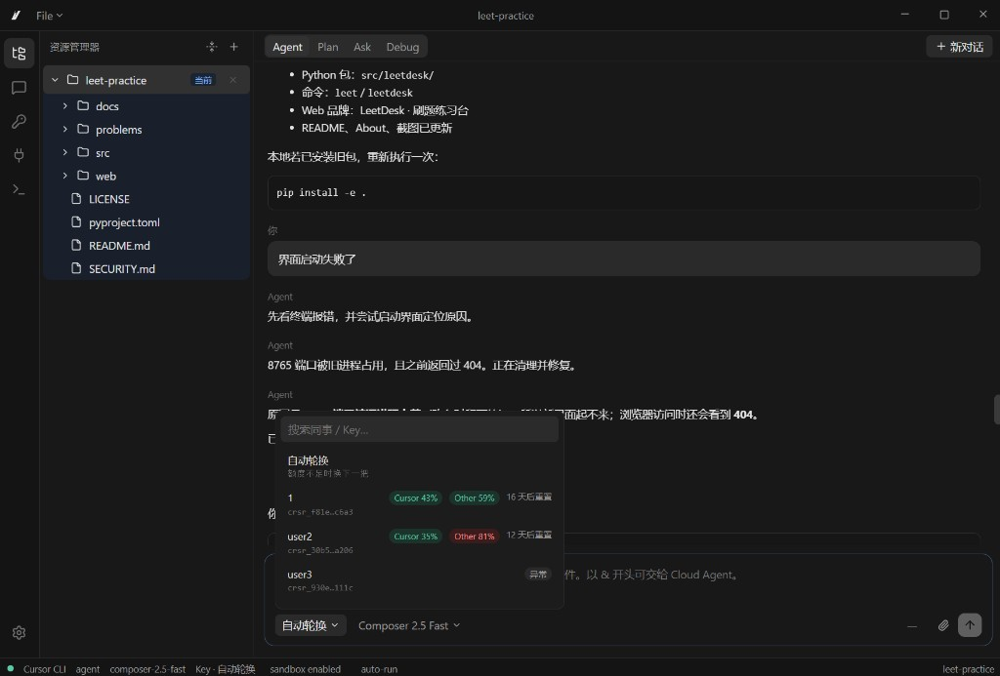
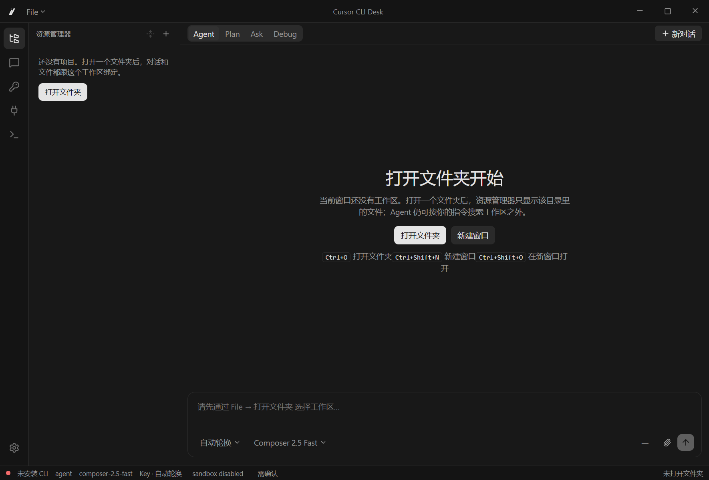
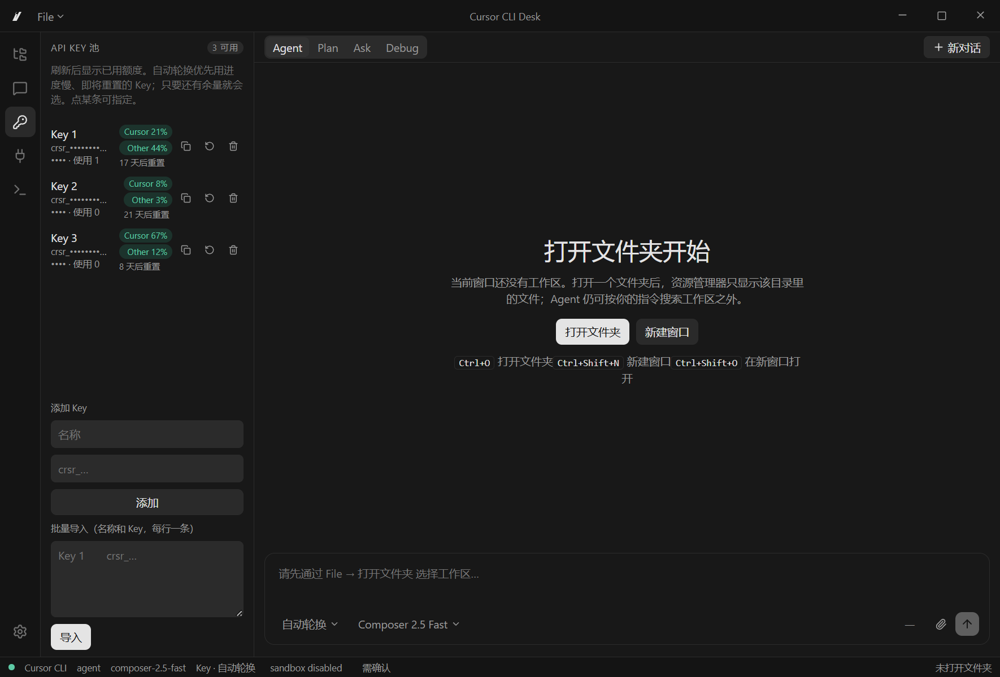

Cursor CLI Desk
Cursor CLI 桌面，带本地 API Key 池。不是 Cursor 编辑器本身。
API Key 池 — 本地管理多把 Key，额度用尽或鉴权失败时自动切换。
Cursor — 对接 Cursor Agent CLI、工作区和对话续写。
CLI — 对话、模式、MCP、沙箱仍走本机
agent 命令。Desk — Electron 桌面，按工作区打开文件、对话和 Agent。
解压后运行 Cursor CLI Desk.exe。数据写在同一目录的 .cli-desk。安装包可选。不必从源码编译。

打开工作区后，对话、文件和 API Key 池在同一窗口里使用。

启动后资源管理器为空。打开文件夹后，对话和文件才绑定到该工作区。

侧栏管理本地 Key 池：添加、导入、查看额度与轮换状态。